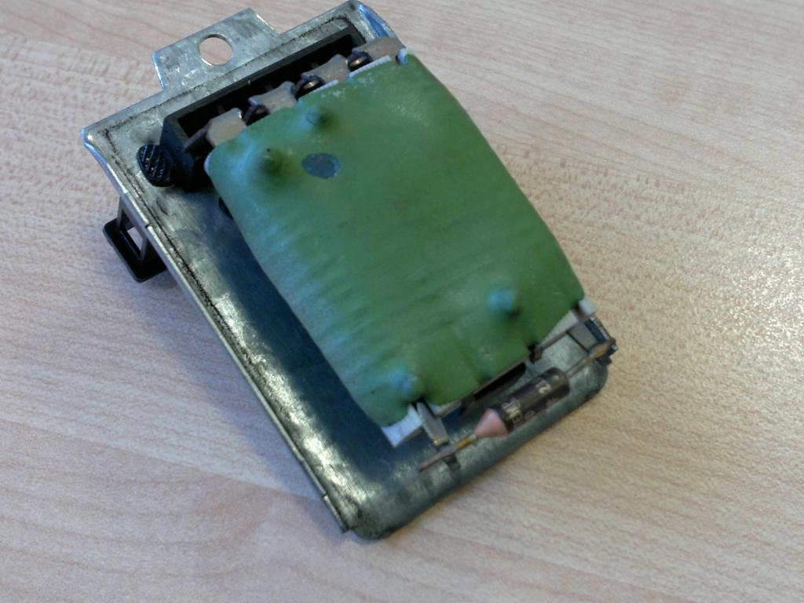
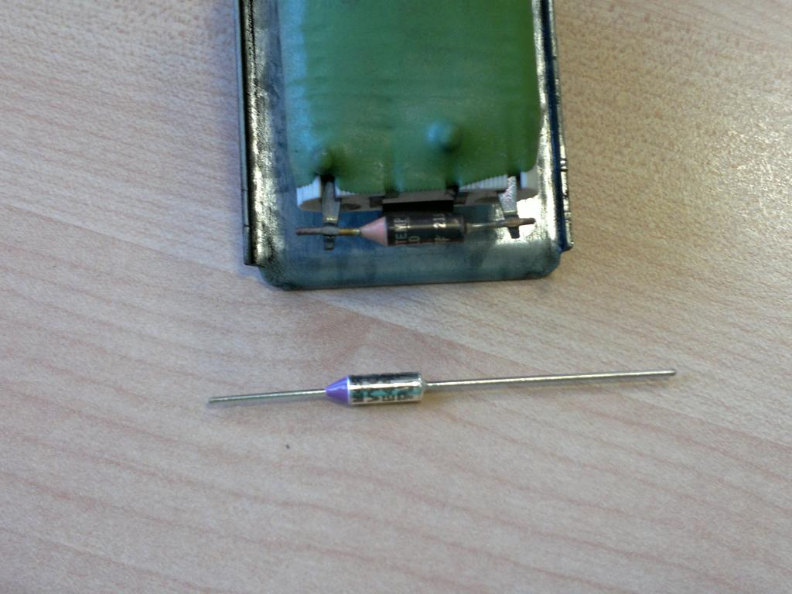
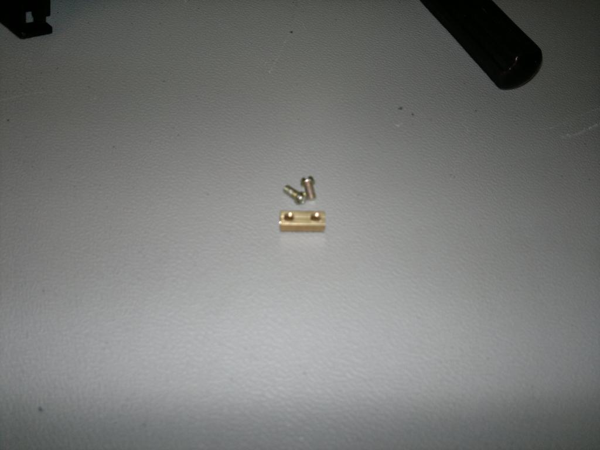
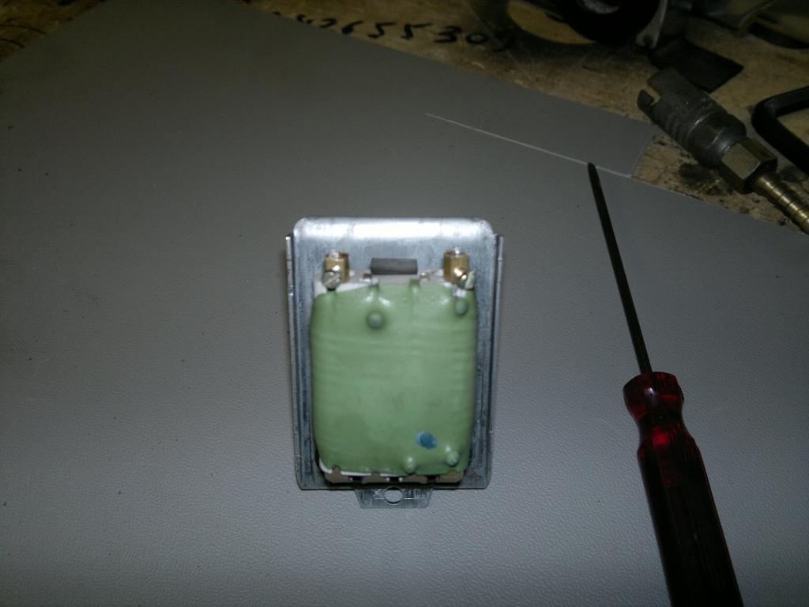
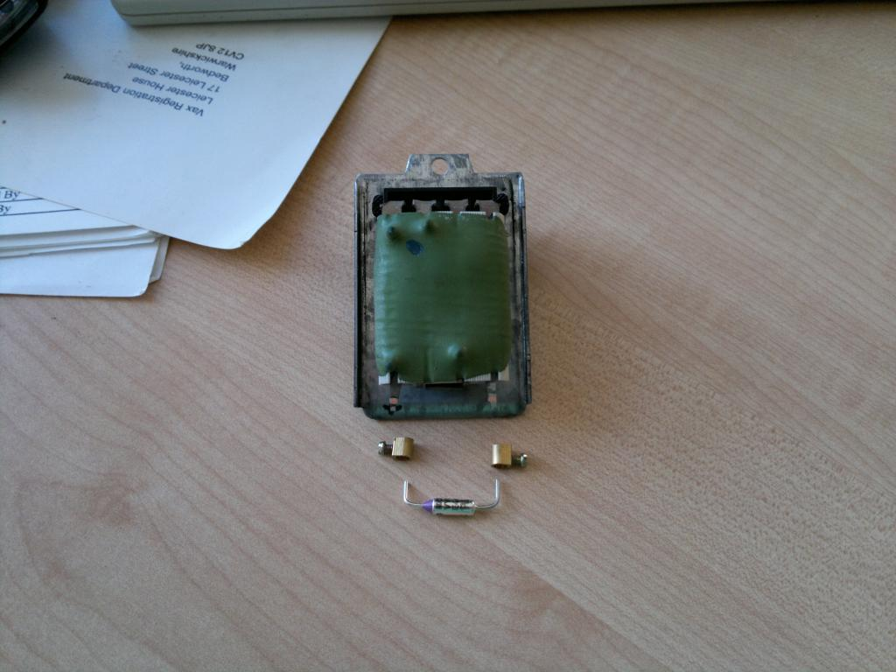
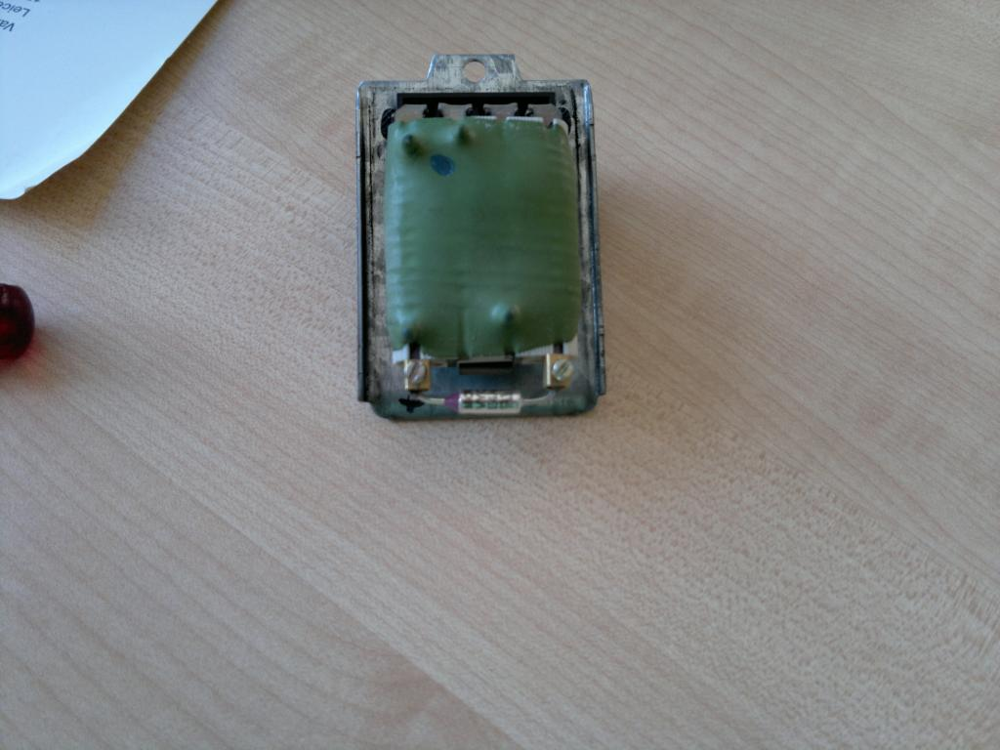

Hi All,
Firstly I'll say that I can't take credit for this as I read it somewhere else but can't find the link anymore so I took my own piccies to share with you.
Also, don't do it if you think your van will go up in flames - mines fine but I'm not responsible if yours does as these components get hot really quick so be careful.
Pic 1 - The offending Article

Pic 2 - Replacement fuse from Maplins - less than a quid. I plunged in and ordered a 184C one but the one that came out was 216C (Maplins do a 216 as well) part numbers for the thermal fuses is RA19. The 184C has lasted fine so far. Simply nip off the old one making a note of the pointy end direction and file off any bits left on the legs.

Pic 3 - Next, get the insert from a small block connector and carefully cut in half.

Pic 4 - The two halves of the connector block should now fit nicely here:-

Pic 5 - All the bits ready to go together with the resistor legs bent and trimmed.

Pic 6 - Finished article. Soldering the fuse could be attempted but you'd have to use a high temp solder (silver) which could fry the thermal resistor during the process or you could dripping a blob of solder into the connector block for a better connection.

Save a fair few £££$$$s and can easily swap the thermal resistor at a later date if it all goes wrong again.
Cheers
Paul.